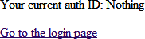
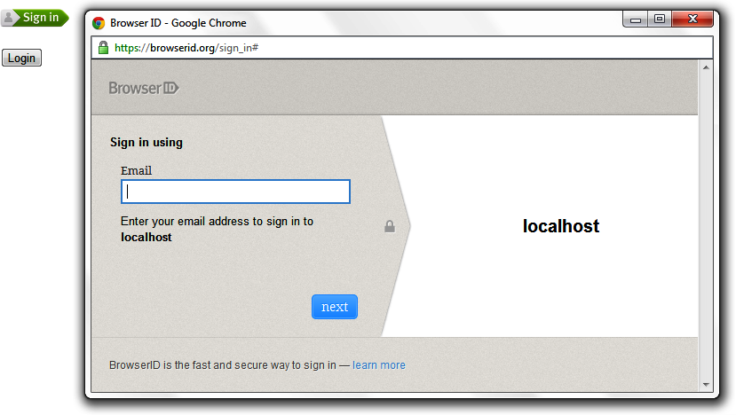
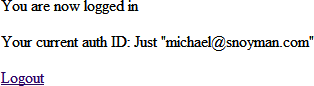

{% include JB/setup %}
{% raw %}
<div>
<div class="book" title="Authenticate Me"><div class="book"><div class="book"><div class="book"><h1 class="title2"><a id="I_sect13_d1e6999" class="calibre1"></a>Authenticate Me</h1></div></div></div><p class="calibre7"></p><p class="calibre7">Let’s jump right in with an example of authentication.</p><a id="I_programlisting3_d1e7005" class="firstname"></a><pre class="programlistinghaskell"><code class="cm">{-# LANGUAGE OverloadedStrings, TemplateHaskell, TypeFamilies,</code>
<code class="cm">             MultiParamTypeClasses, QuasiQuotes #-}</code>
<code class="kr">import</code> <code class="nn">Yesod</code>
<code class="kr">import</code> <code class="nn">Yesod.Auth</code>
<code class="kr">import</code> <code class="nn">Yesod.Auth.BrowserId</code>
<code class="kr">import</code> <code class="nn">Yesod.Auth.GoogleEmail</code>
<code class="kr">import</code> <code class="nn">Data.Text</code> <code class="p">(</code><code class="kt">Text</code><code class="p">)</code>
<code class="kr">import</code> <code class="nn">Network.HTTP.Conduit</code> <code class="p">(</code><code class="kt">Manager</code><code class="p">,</code> <code class="nf">newManager</code><code class="p">,</code> <code class="nf">def</code><code class="p">)</code>

<code class="kr">data</code> <code class="kt">MyAuthSite</code> <code class="ow">=</code> <code class="kt">MyAuthSite</code>
    <code class="p">{</code> <code class="n">httpManager</code> <code class="ow">::</code> <code class="kt">Manager</code>
    <code class="p">}</code>

<code class="nf">mkYesod</code> <code class="s">"MyAuthSite"</code> <code class="p">[</code><code class="n">parseRoutes</code><code class="o">|</code>
<code class="o">/</code> <code class="kt">RootR</code> <code class="kt">GET</code>
<code class="o">/</code><code class="n">auth</code> <code class="kt">AuthR</code> <code class="kt">Auth</code> <code class="n">getAuth</code>
<code class="o">|</code><code class="p">]</code>

<code class="kr">instance</code> <code class="kt">Yesod</code> <code class="kt">MyAuthSite</code> <code class="kr">where</code>
    <code class="cm">-- Note: In order to log in with BrowserID, you must correctly</code>
    <code class="cm">-- set your hostname here.</code>
    <code class="n">approot</code> <code class="ow">=</code> <code class="kt">ApprootStatic</code> <code class="s">"http://localhost:3000"</code>

<code class="kr">instance</code> <code class="kt">YesodAuth</code> <code class="kt">MyAuthSite</code> <code class="kr">where</code>
    <code class="kr">type</code> <code class="kt">AuthId</code> <code class="kt">MyAuthSite</code> <code class="ow">=</code> <code class="kt">Text</code>
    <code class="n">getAuthId</code> <code class="ow">=</code> <code class="n">return</code> <code class="o">.</code> <code class="kt">Just</code> <code class="o">.</code> <code class="n">credsIdent</code>

    <code class="n">loginDest</code> <code class="kr">_</code> <code class="ow">=</code> <code class="kt">RootR</code>
    <code class="n">logoutDest</code> <code class="kr">_</code> <code class="ow">=</code> <code class="kt">RootR</code>

    <code class="n">authPlugins</code> <code class="kr">_</code> <code class="ow">=</code>
        <code class="p">[</code> <code class="n">authBrowserId</code>
        <code class="p">,</code> <code class="n">authGoogleEmail</code>
        <code class="p">]</code>

    <code class="n">authHttpManager</code> <code class="ow">=</code> <code class="n">httpManager</code>

<code class="kr">instance</code> <code class="kt">RenderMessage</code> <code class="kt">MyAuthSite</code> <code class="kt">FormMessage</code> <code class="kr">where</code>
    <code class="n">renderMessage</code> <code class="kr">_</code> <code class="kr">_</code> <code class="ow">=</code> <code class="n">defaultFormMessage</code>

<code class="nf">getRootR</code> <code class="ow">::</code> <code class="kt">Handler</code> <code class="kt">RepHtml</code>
<code class="nf">getRootR</code> <code class="ow">=</code> <code class="kr">do</code>
    <code class="n">maid</code> <code class="ow">&lt;-</code> <code class="n">maybeAuthId</code>
    <code class="n">defaultLayout</code> <code class="p">[</code><code class="n">whamlet</code><code class="o">|</code>
<code class="o">&lt;</code><code class="n">p</code><code class="o">&gt;</code><code class="kt">Your</code> <code class="n">current</code> <code class="n">auth</code> <code class="kt">ID:</code> <code class="o">#</code><code class="p">{</code><code class="n">show</code> <code class="n">maid</code><code class="p">}</code>
<code class="o">$</code><code class="n">maybe</code> <code class="kr">_</code> <code class="ow">&lt;-</code> <code class="n">maid</code>
    <code class="o">&lt;</code><code class="n">p</code><code class="o">&gt;</code>
        <code class="o">&lt;</code><code class="n">a</code> <code class="n">href</code><code class="o">=@</code><code class="p">{</code><code class="kt">AuthR</code> <code class="kt">LogoutR</code><code class="p">}</code><code class="o">&gt;</code><code class="kt">Logout</code>
<code class="o">$</code><code class="n">nothing</code>
    <code class="o">&lt;</code><code class="n">p</code><code class="o">&gt;</code>
        <code class="o">&lt;</code><code class="n">a</code> <code class="n">href</code><code class="o">=@</code><code class="p">{</code><code class="kt">AuthR</code> <code class="kt">LoginR</code><code class="p">}</code><code class="o">&gt;</code><code class="kt">Go</code> <code class="n">to</code> <code class="n">the</code> <code class="n">login</code> <code class="n">page</code>
<code class="o">|</code><code class="p">]</code>

<code class="nf">main</code> <code class="ow">::</code> <code class="kt">IO</code> <code class="nb">()</code>
<code class="nf">main</code> <code class="ow">=</code> <code class="kr">do</code>
    <code class="n">man</code> <code class="ow">&lt;-</code> <code class="n">newManager</code> <code class="n">def</code>
    <code class="n">warpDebug</code> <code class="mi">3000</code> <code class="o">$</code> <code class="kt">MyAuthSite</code> <code class="n">man</code>
</pre><p class="calibre7">We’ll start with the route declarations. First we declare our standard <code class="literal">RootR</code> route, and then we set up the authentication
            subsite. Remember that a subsite needs four parameters: the path to the subsite, the
            route name, the subsite name, and a function to get the subsite value. In other words,
            based on the line:</p><a id="I_programlisting3_d1e7015" class="firstname"></a><pre class="programlistinghaskell">/auth AuthR Auth getAuth</pre><p class="calibre7">We need to have <code class="literal">getAuth :: MyAuthSite -&gt; Auth</code>. While
            we haven’t written that function ourselves, <code class="function">yesod-auth</code> provides it automatically. With other subsites (like static
            files), we provide configuration settings in the subsite value, and therefore need to
            specify the get function. In the auth subsite, we specify these settings in a separate
            typeclass, <code class="literal">YesodAuth</code>.</p><div class="tip" title="Note"><h3 class="title3">Note</h3><p class="calibre7">Why not use the subsite value? There are a number of settings we would like to give for
                an auth subsite, and doing so from a record type would be inconvenient. Also, since
                we want to have an <code class="literal">AuthId</code> associated type, a
                typeclass is more natural. On the flip side, why not use a typeclass for all
                subsites? It comes with a downside: you can then only have a single instance per
                site, disallowing serving different sets of static files from different routes.
                Also, the subsite value works better when we want to load data at app
                initialization.</p></div><p class="calibre7">So what exactly goes in this YesodAuth instance? There are six required
   declarations:</p><div class="book"><ul class="itemizedlist"><li class="listitem"><p class="calibre7"><code class="literal">AuthId</code> is an associated type. This is the value
                        <code class="literal">yesod-auth</code> will give you when you ask if
                    a user is logged in (via <code class="literal">maybeAuthId</code> or
                        <code class="literal">requireAuthId</code>). In our case, we’re simply
                    using <code class="literal">Text</code>, to store the raw
                    identifier—an
                    email address, as we’ll soon see.</p></li><li class="listitem"><p class="calibre7"><code class="literal">getAuthId</code> gets the actual <code class="literal">AuthId</code> from the <code class="literal">Creds</code> (credentials) data type. This type has three pieces of information:
    the authentication backend used (browserid or googleemail in our case), the actual identifier,
    and an associated list of arbitrary extra information. Each backend provides different extra
    information; see their docs for more information.</p></li><li class="listitem"><p class="calibre7"><code class="literal">loginDest</code> gives the route to redirect to after a successful
    login.</p></li><li class="listitem"><p class="calibre7">Likewise, <code class="literal">logoutDest</code> gives the route to redirect to after a
    logout.</p></li><li class="listitem"><p class="calibre7"><code class="literal">authPlugins</code> is a list of individual authentication
                    backends to use. In our example, we’re using BrowserID, which logs in via
                    Mozilla’s BrowserID system, and
                    Google
                    Email, which authenticates a user’s email address using their
                    Google account. The nice thing about these two backends is:</p><div class="book"><ul class="itemizedlist2"><li class="listitem"><p class="calibre7 pcalibre">They require no setup, as opposed to Facebook or OAuth, which
                                require
                                users to establish credentials.</p></li><li class="listitem"><p class="calibre7 pcalibre">They use email addresses as identifiers, which people are
                                comfortable with, as opposed to OpenID, which uses a URL.</p></li></ul></div></li><li class="listitem"><p class="calibre7"><code class="literal">authHttpManager</code> gets an HTTP connection manager from the foundation type.
    This allow authentication backends which use HTTP connections (i.e., almost all third-party
    login systems) to share connections, avoiding the cost of restarting a TCP connection for each
    request.</p></li></ul></div><p class="calibre7">In our <code class="literal">RootR</code> handler, we have some simple links to the login and
   logout pages, depending on whether or not the user is logged in. Notice how we construct these
   subsite links: first we give the subsite route name (<code class="literal">AuthR</code>), followed by the
   route within the subsite (<code class="literal">LoginR</code> and <code class="literal">LogoutR</code>).</p><p class="calibre7">The figures below show what the login process looks like from a user perspective.</p><div class="figure"><a id="concept_d1y_t2f_p2-x-26" class="firstname"></a><div class="book"><div class="book"><a id="I_mediaobject3_d1e7125" class="firstname"></a></div></div><p class="title7">Figure 14-1. Initial page load</p></div><div class="figure"><a id="concept_d1y_t2f_p2-x-28" class="firstname"></a><div class="book"><div class="book"><a id="I_mediaobject3_d1e7133" class="firstname"></a></div></div><p class="title7">Figure 14-2. BrowserID login screen</p></div><div class="figure"><a id="concept_d1y_t2f_p2-x-30" class="firstname"></a><div class="book"><div class="book"><a id="I_mediaobject3_d1e7141" class="firstname"></a></div></div><p class="title7">Figure 14-3. Homepage after logging in</p></div></div></div>

{% endraw %}

